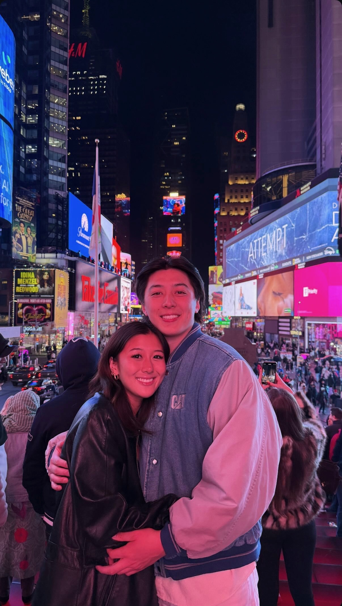
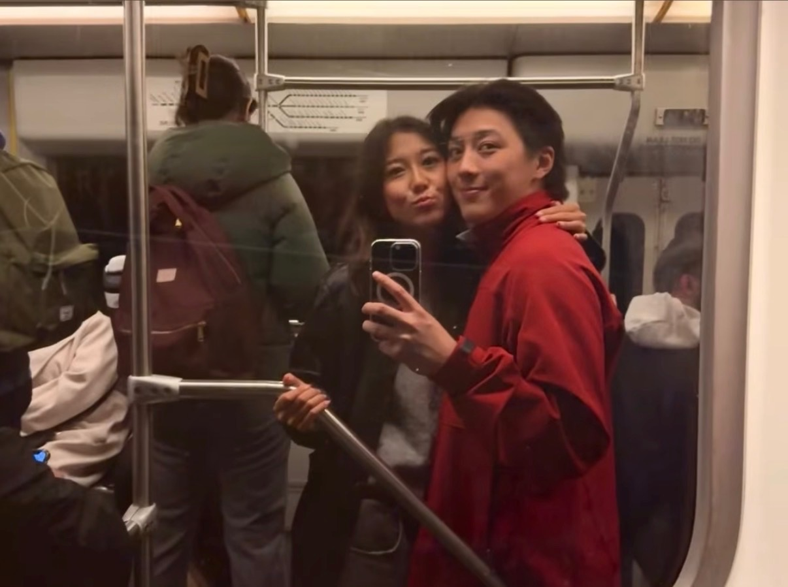
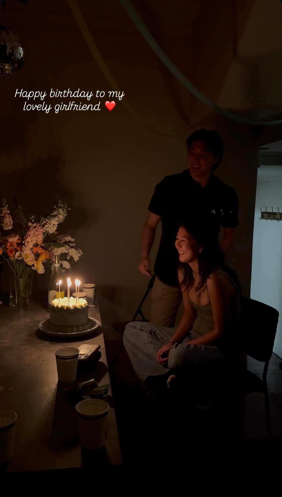
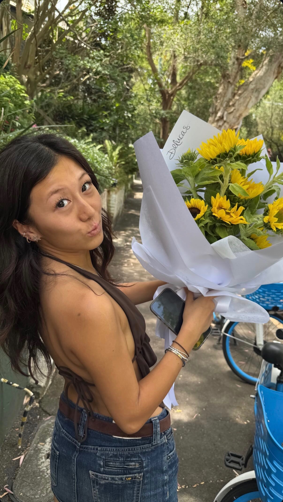
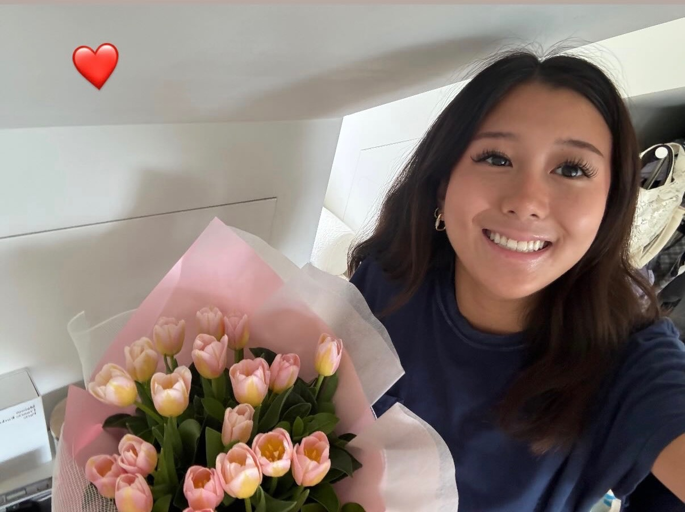

Where It All Began

We met on a dating app when you were visiting Boston.
I had no idea that one swipe would lead to some of the most meaningful memories of my life.
Every memory. Every trip. Every moment.
We met on a dating app when you were visiting Boston.
I had no idea that one swipe would lead to some of the most meaningful memories of my life.
Our first date was mini golf in Back Bay.
You beat me.
I should have known then that I was in trouble.

Our first trip together.
Walking through Times Square with your beautiful smile beside me will always be one of my favorite memories.
It was there that I told you I loved you.
And above New York City, I asked you to be my girlfriend.

The train rides. The cuddles. The random photos.
The quiet moments that somehow became my favorite memories.
Surfing. Shaved ice. Sunsets by China Walls.
Cuddling after long days.
Some of the happiest days of my life.

Seeing you smile was always my favorite gift.

Kind. Loyal. Sweet. Loving.
You cared about me when life felt difficult.
You were there when I struggled.

One of my favorite photos of you.
One of my favorite people.
A very happy one year.
A year filled with memories I will always cherish.
The best part was never where we were.
It was always you.

Beautiful views. Quiet moments. The kind of memories that stay with you forever.

Ocean air. Long walks. Another chapter of us.

More adventures. More laughter. More memories that became part of our story.
Where we met and where everything began.
Where I told you I loved you and asked you to be my girlfriend.
Family, adventure, and seeing your world.
Visiting you across the world.
New adventures together.
Surfing, shaved ice, sunsets, and happiness.
My hometown and sharing my world with you.
Beautiful scenery and peaceful memories.
Ocean views and unforgettable moments.
Another chapter of our story.
You were kind, loving, loyal, and always there for me.
You cared about me during some of the hardest periods of my life.
As time passed, we grew distant. I took you for granted. I was not as present as I should have been.
I regret that deeply.
This experience taught me what vulnerability truly means.
It taught me how important it is to show up for the people you love every day.
I want to be better. More present. More attentive. More honest. More grateful.
No matter what happens, these memories will always mean the world to me.
Thank you for every memory, Jacqueline 🌷